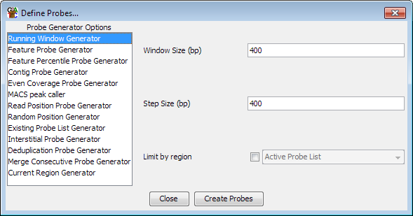
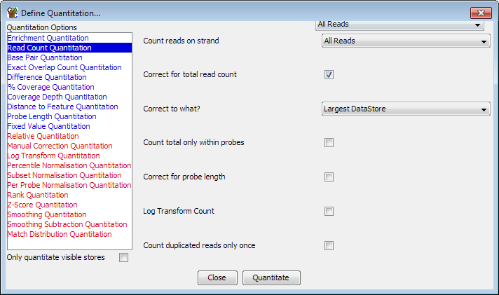

If you want to use any of the analysis tools in SeqMonk rather than just viewing the raw data then you will need to perform a quantitation.
There are two step to quantitating data, the first of which you'd normally only perform once, but the second of which could be performed several times within a single analysis session. In addition there are some pre-built pipelines which automate these steps allowing all of the quantitation to be done in a single step.
This quantitation system has been designed to be as flexible as possible and as such there are multiple ways to define probes and multiple ways to use your data to associate a value with each of those probes.
If you can think of a new way to define probes or a new way to quantitate your data please contact us and we'll look at adding it in as a new quantitation option.
To being defining probes select Data > Define Probes.

Down the left hand side are the currently available list of probe generators. If you select an item in this list you will see the options for that generator appear in the area on the right. Once you are happy with the options you have set you can press the "Create Probes" button to begin generating your probes.
You should be aware that generating a set of probes will automatically remove any probes you currently have defined and all current probe lists. It is normal therefore to define your probe set only once during an analysis, or to keep separate project files for the same data with different sets of probes defined.
Once you have defined your probes you will need to move straight on to quantitating them as they won't show up in the display until a quantitation has associated a value with each probe.
As with probe generation there are a variety of ways to quantiate your data. To start quantitation you should select Data > Quantitate Existing Probes.

The list on the left are the different available modules for quantitating your data. If you select an item in the list then the options for that module will appear in the area on the right. Once you have set the appropriate options you can press the "Quantitate" button at the bottom to start the quantitation process.
Some quantitation methods do not operate on the raw data, but instead modify the existing quantitation values you already have. In the list of quantitation options methods which require an existing quantitation are shown in red, and those which don't are shown in blue. If you do not have an existing quantitation then only the blue options will be shown.
Some quantitation methods are designed to work on HiC paired reads rather than normal mapped data. These methods are shown in green and will not appear if your project doesn't currently contain any HiC data stores.
When you quantitate your data you will not change the list of probes you have defined and your existing probe lists will remain intact. It is therefore common to perform a quantitation - perform some filtering - perform a different quantiation - perform some more filtering, in order to generate a final set of regions of interest.
Since different quantitation methods produce drastically different quantitated data ranges your data zoom level will be automatically adjusted after each quantitation to something appropriate to the new quantitation range.
If you have a large number of data stores defined in your project then you may wish to only analyse a subset of these. To speed up this type of analysis you can choose to apply the quantitation you have selected only to the data stores which are currently visble in the chromosome view. To do this simply tick the box which says "Only quantitate visible stores"
In addition to quantitating your data using the normal two step approach there is also the option to use a pre-built quantitation pipeline. Pipelines can perform the probe generation and quantitation steps in a single operation and also have the ability to run a default set of filters. In some cases they are simply ways to automate tasks which you could have performed with the standard quantitation tools, but they are also able to do things normal quantitation cannot. For example the RNA-Seq pipeline generates probes over entire transcripts, but performs a quantitation only on reads falling inside exons within that transcript.